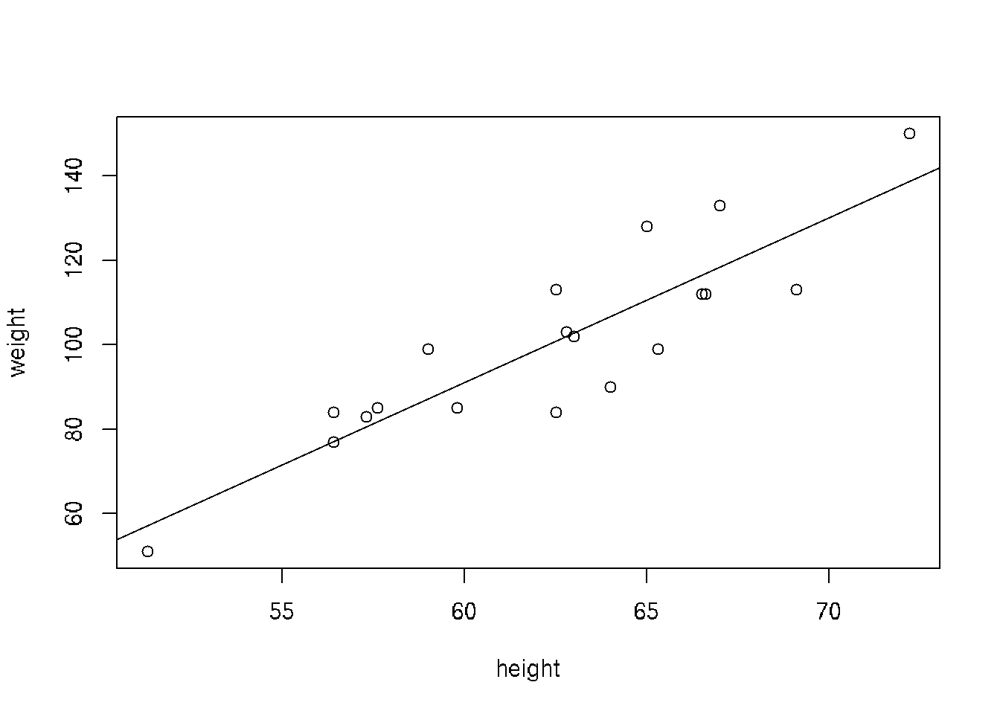

Chapter 23 Logistic Regression
glm()
In statistics, the logistic model (or logit model) is a statistical model with input (independent variable) a continuous variable and output (dependent variable) a binary variable (discret choice, y/n or 1/0).
Example: Student pass the exam. A group of 20 students spend between 0 and 6 hours studying for an exam. How does the number of hours spent studying affect the probability that the student will pass the exam?
hours <- c(0.5, 0.75, 1, 1.25, 1.5, 1.75, 1.75, 2, 2.25, 2.5, 2.75, 3, 3.25, 3.5, 4, 4.25, 4.5, 4.75, 5, 5.5)
pass <- c(0,0,0,0,0,0,1,0,1,0,1,0,1,0,1,1,1,1,1,1)
plot(pass~hours)
##
## Call: glm(formula = hours ~ pass)
##
## Coefficients:
## (Intercept) pass
## 1.775 2.025
##
## Degrees of Freedom: 19 Total (i.e. Null); 18 Residual
## Null Deviance: 43.16
## Residual Deviance: 22.66 AIC: 65.25## probability odds
## 1 0.00 0.00000000
## 2 0.05 0.05263158
## 3 0.10 0.11111111
## 4 0.15 0.17647059
## 5 0.20 0.25000000
## 6 0.25 0.33333333


23.1 Next part
library(data.table)
df <- fread('https://raw.githubusercontent.com/suvarzz/data/master/data_classification.csv', header=T, sep=",")
head(df)
plot(df[pass==1][,!3], col='red')
points(df[pass==0][,!3], col='blue')
model.logit <- glm(pass ~ studied + slept, data = df, family = 'binomial')
summary(model.logit)
p.lda <- predict(model.logit, df, type = 'response')
df$predicted <- ifelse(p.lda > 0.5, 1, 0)
head(df)
a=-coef(model.logit)[1]/coef(model.logit)[2],
b=-coef(model.logit)[1]/coef(model.logit)[3])
b0 = coef(model.logit)[1]
b1 = mymodel$coefficients[[2]]
b2 = mymodel$coefficients[[3]]
z = b0 + (b1 * 1) + (b2 * 4)
p = 1 / (1 + exp(-z))
if p=0.5 => z = 0 => b0 + b1*x + b2*y =>
segments(0,10.87,9.26,0)
slept=(3.77-0.474*studied)/0.338
(0, 3.77/0.474) = (9.2, 0)
(3.77/0.474,0) = (0, 10.87)
segments(9.2,0, 0,10.87, lwd=2)
--
filter() operates on rows, whereas select() operates on columns
library(caret)
library(neuralnet)
Linear Discriminant Analysis ( LDA ) and Principal Component Analysis ( PCA )
The basic difference between these two is that LDA uses information of classes to find new features in order to maximize its separability while PCA uses the variance of each feature to do the same. In this context, LDA can be consider a supervised algorithm and PCA an unsupervised algorithm.
https://github.com/BIMSBbioinfo/janggu or via23.2 NEXT Part
# For binary dependent variables build models:
# 1. LR - Logistic regression
# 2. LDA - Linear discriminant analysis
# 3. QDA - quadrat discriminant analysis
# Detect border of decision, use ROC-curves
# Source: Course 'Math modeling' practical work, State University of Management, Moscow
# link: https://sites.google.com/a/kiber-guu.ru/r-practice/home
library('ISLR')
library('GGally')
library('MASS')
my.seed <- 12345
train.percent <- 0.85
options("ggmatrix.progress.bar" = FALSE)
# Data set from ISLR: is credits returned Y/N dependent on: student, average balance and income.
?Default
head(Default)
str(Default)
### Primary analysis
# Scatter plots for primary analysis
ggp <- ggpairs(Default)
print(ggp, progress = FALSE)
# доли наблюдений в столбце default
table(Default$default) / sum(table(Default$default))
### Train data subset
set.seed(my.seed)
inTrain <- sample(seq_along(Default$default),
nrow(Default)*train.percent)
df <- Default[inTrain, ]
# фактические значения на обучающей выборке
Факт <- df$default
### 1. Logistic regression modeling
model.logit <- glm(default ~ balance, data = df, family = 'binomial')
summary(model.logit)
# прогноз: вероятности принадлежности классу 'Yes' (дефолт)
p.logit <- predict(model.logit, df, type = 'response')
Прогноз <- factor(ifelse(p.logit > 0.5, 2, 1),
levels = c(1, 2),
labels = c('No', 'Yes'))
# матрица неточностей
conf.m <- table(Факт, Прогноз)
conf.m
# чувствительность
conf.m[2, 2] / sum(conf.m[2, ])
# специфичность
conf.m[1, 1] / sum(conf.m[1, ])
# верность
sum(diag(conf.m)) / sum(conf.m)
###. 2. LDA model
model.lda <- lda(default ~ balance, data = Default[inTrain, ])
model.lda
# прогноз: вероятности принадлежности классу 'Yes' (дефолт)
p.lda <- predict(model.lda, df, type = 'response')
Прогноз <- factor(ifelse(p.lda$posterior[, 'Yes'] > 0.5,
2, 1),
levels = c(1, 2),
labels = c('No', 'Yes'))
# матрица неточностей
conf.m <- table(Факт, Прогноз)
conf.m
conf.m[2, 2] / sum(conf.m[2, ]) # sensitivity
conf.m[1, 1] / sum(conf.m[1, ]) # specitivity
sum(diag(conf.m)) / sum(conf.m) # accurasy
### 3. QDA modeling
model.qda <- qda(default ~ balance, data = Default[inTrain, ])
model.qda
# прогноз: вероятности принадлежности классу 'Yes' (дефолт)
p.qda <- predict(model.qda, df, type = 'response')
Прогноз <- factor(ifelse(p.qda$posterior[, 'Yes'] > 0.5,
2, 1),
levels = c(1, 2),
labels = c('No', 'Yes'))
# матрица неточностей
conf.m <- table(Факт, Прогноз)
conf.m
conf.m[2, 2] / sum(conf.m[2, ]) # чувствительность
conf.m[1, 1] / sum(conf.m[1, ]) # специфичность
sum(diag(conf.m)) / sum(conf.m) # верность
### 4. ROC-curve and detection of decision border
# считаем 1-SPC и TPR для всех вариантов границы отсечения
x <- NULL # для (1 - SPC)
y <- NULL # для TPR
# заготовка под матрицу неточностей
tbl <- as.data.frame(matrix(rep(0, 4), 2, 2))
rownames(tbl) <- c('fact.No', 'fact.Yes')
colnames(tbl) <- c('predict.No', 'predict.Yes')
# вектор вероятностей для перебора
p.vector <- seq(0, 1, length = 501)
# цикл по вероятностям отсечения
for (p in p.vector){
# прогноз
Прогноз <- factor(ifelse(p.lda$posterior[, 'Yes'] > p,
2, 1),
levels = c(1, 2),
labels = c('No', 'Yes'))
# фрейм со сравнением факта и прогноза
df.compare <- data.frame(Факт = Факт, Прогноз = Прогноз)
# заполняем матрицу неточностей
tbl[1, 1] <- nrow(df.compare[df.compare$Факт == 'No' & df.compare$Прогноз == 'No', ])
tbl[2, 2] <- nrow(df.compare[df.compare$Факт == 'Yes' & df.compare$Прогноз == 'Yes', ])
tbl[1, 2] <- nrow(df.compare[df.compare$Факт == 'No' & df.compare$Прогноз == 'Yes', ])
tbl[2, 1] <- nrow(df.compare[df.compare$Факт == 'Yes' & df.compare$Прогноз == 'No', ])
# считаем характеристики
TPR <- tbl[2, 2] / sum(tbl[2, 2] + tbl[2, 1])
y <- c(y, TPR)
SPC <- tbl[1, 1] / sum(tbl[1, 1] + tbl[1, 2])
x <- c(x, 1 - SPC)
}
# строим ROC-кривую
par(mar = c(5, 5, 1, 1))
# кривая
plot(x, y, type = 'l', col = 'blue', lwd = 3,
xlab = '(1 - SPC)', ylab = 'TPR',
xlim = c(0, 1), ylim = c(0, 1))
# прямая случайного классификатора
abline(a = 0, b = 1, lty = 3, lwd = 2)
# точка для вероятности 0.5
points(x[p.vector == 0.5], y[p.vector == 0.5], pch = 16)
text(x[p.vector == 0.5], y[p.vector == 0.5], 'p = 0.5', pos = 4)
# точка для вероятности 0.2
points(x[p.vector == 0.2], y[p.vector == 0.2], pch = 16)
text(x[p.vector == 0.2], y[p.vector == 0.2], 'p = 0.2', pos = 4)
Прогноз <- factor(ifelse(p.lda$posterior[, 'Yes'] > 0.2,
2, 1),
levels = c(1, 2),
labels = c('No', 'Yes'))
conf.m <- table(Факт, Прогноз)
conf.m
# чувствительность
conf.m[2, 2] / sum(conf.m[2, ])
# специфичность
conf.m[1, 1] / sum(conf.m[1, ])
# верность
sum(diag(conf.m)) / sum(conf.m)23.3 NExt part
# Example of logistic regression
# Source: 17 - Анализ данных в R. Логистическая регрессия by Anatoliy Karpov
# Read data set train.csv:
# Statistics of students in a school
# gender - male/femail
# read, write, math - points for subjects
# hon - if honorary degree Y/N
# FIX combine train and test into one csv file. Split train and test inside this script
setwd("~/RData")
df <- read.csv("train.csv", sep=";")
# Visual inspection of the dataset
head(df)
str(df)
View(df)
# N-not the best mark, Y-the best mark
library(ggplot2)
ggplot(df, aes(read,math,col=gender))+geom_point()+facet_grid(.~hon)+
theme(axis.text=element_text(size=25), axis.title=element_text(size=25, face='bold'))
# Apply logistic regression
# How hon depends on different variables: read, math, gender
fit <- glm(hon ~ read + math + gender, df, family = "binomial")
summary(fit)
# Meanings of coefficients:
# read-estimate: 0.06677 - if female, math is fixed, if read change to 1, then ln(odds) will be changed to 0.06677
# Get data from fit
exp(fit$coefficients)
# Predict model - ln(odds)
head(predict(object=fit))
# Predict model - return probability to get the best mark for every person
head(predict(object = fit, type = "response"))
# Add probabilities to get the best mark for every person in df
df$prob <- predict(object = fit, type = "response")
df
# Part 2
# ROC-curve of predicted model
library(ROCR)
# Predicted values and real values
pred_fit <- prediction(df$prob, df$hon)
# Calculate tpr - true positive rate and fpr - false positive rate
perf_fit <- performance(pred_fit, "tpr", "fpr")
# plot ROC-curve
plot(perf_fit, colorize=T, print.cutoffs.at = seq(0,1, by=0.1))
# Area under the curve: 0.87
auc <- performance(pred_fit, measure = "auc")
str(auc)
# How to detect the border and make a decision if student will get honorary degree
# Specificity - how good we can predict negative results
perf3 <- performance(pred_fit, x.measure = "cutoff", measure = "spec")
# Sencitivity - how good we can predict positive results
perf4 <- performance(pred_fit, x.measure = "cutoff", measure = "sens")
# Общая интенсивность классификатора
perf5 <- performance(pred_fit, x.measure = "cutoff", measure = "acc")
plot(perf3, col = 'red', lwd = 2)
plot(add=T, perf4, col = "green", lwd = 2)
plot(add=T, perf5, lwd = 2)
legend(x = 0.6, y = 0.3, c("spec", "sens", "accur"), lty=1, col=c("red", "green", "black"),
bty='n', cex=1, lwd=2)
abline(v=0.255, lwd=2)
# The border is the intersection of all three curves
# Add column with prediced values Y/N
df$pred_resp <- factor(ifelse(df$prob > 0.255, 1, 0), labels=c("N", "Y"))
# 1 if prediction is correct, 0 if not correct
df$correct <- ifelse(df$pred_resp == df$hon, 1, 0)
df
# blue - correct classified, red - incorrect classified
# it is more difficult to predict positive result
ggplot(df, aes(prob, fill = factor(correct)))+
geom_dotplot()+
theme(axis.text=element_text(size=25),
axis.title=element_text(size=25, face="bold"))
# Percent of positive predictions
mean(df$correct)
# Part 3 - Prediction using test data
test_df <- read.csv("test.csv", sep=";")
test_df
# Predict honorary members
test_df$prob_predict <- predict(fit, newdata=test_df, type="response")
test_df$pred_resp <- factor(ifelse(test_df$prob_predict > 0.255, 1, 0), labels=c("N", "Y"))
test_df